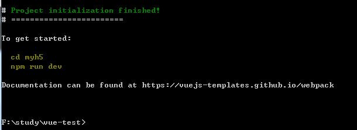

原文连接:https://www.cnblogs.com/jy1314520/p/jylegend.html
前提
vue在前端技术中使用越来越多，也成为了主流框架，花点时间稍微了解下vue-cli、vue-router结合element-ui的使用。本人使用的是windows系统，后续介绍以windows7系统为例。
1.安装vue-cli
首先保证自己电脑上已经安装过nodejs，是否安装打开cmd，输入 node -v，出现图上这个说明已经安装（未安装的请访问nodejs官网进行下载安装）
安装完成后，打开任意磁盘新建文件夹vue-test，我进入的是F盘，进入vue-test文件夹，按住shift键和鼠标右键会出现
这样可以快捷打开cmd了
国内访问npm比较慢，可以使用淘宝镜像npm，输入命令 ：
npm install -g cnpm --registry=https://registry.npm.taobao.org
安装完成后使用命令 cnpm install vue 和 cnpm install vue-cli -g 使用-g的意思是使用全局安装vue-cli
cnpm install vue
cnpm install vue-cli -g安装完成后就可以初始化vue-cli了
vue init webpack 是不是安装到当前文件夹如果不想可以使用命令
vue init webpack myh5 --安装到myh5文件夹中模板下载完成后会出现
这两个根据需要，我都取消了
一顿操作后，会继续下载巴拉巴拉一些东西，等等等...

初始化完成后输入命令：
cd myh5 & npm run dev
打开浏览器输入：http://localhost:8081 （端口号8081是我的电脑上使用，每台电脑可能不一样）
生成的文件夹：

每个文件具体解释可以参考：http://www.cnblogs.com/hongdiandian/p/8311645.html
2.结合element-ui
安装element-ui，使用命令(官方给出的安装少了file-loader，导致引用css文件报错，所以一起安装了)：
cnpm install element-ui --save
cnpm install element-theme -g (使用全局安装，后面使用少坑)
cnpm install element-theme-chalk -D
cnpm install file-loader --save初始化element-ui的css文件，输入命令：
et -i会在当前目录生成一个文件element-variables.sass，再次输入命令：
et -o src/theme-et/ --意思是在src/theme-et文件夹下初始化按图打开文件：
在index.js文件里面加入下面代码
import ElementUi from 'elemet-ui'
import '@/theme-et/index.css'
Vue.use(ElementUi)添加后的文件夹内容：
然后打开 HelloWorld.vue文件将class="hello"这个div整个删除只剩下<template></template>：

然后加入：
<div>
<el-row>
<el-button>默认按钮</el-button>
<el-button type="primary">主要按钮</el-button>
<el-button type="success">成功按钮</el-button>
<el-button type="info">信息按钮</el-button>
<el-button type="warning">警告按钮</el-button>
<el-button type="danger">危险按钮</el-button>
</el-row>
</div>完整代码应该是：
保存后打开cmd，输入命令：npm run dev
大功告成啦
刚学习的时候建议关闭eslint，不小心开启了，也可以关闭具体教程
祝大家学习愉快，gogogogo！！！